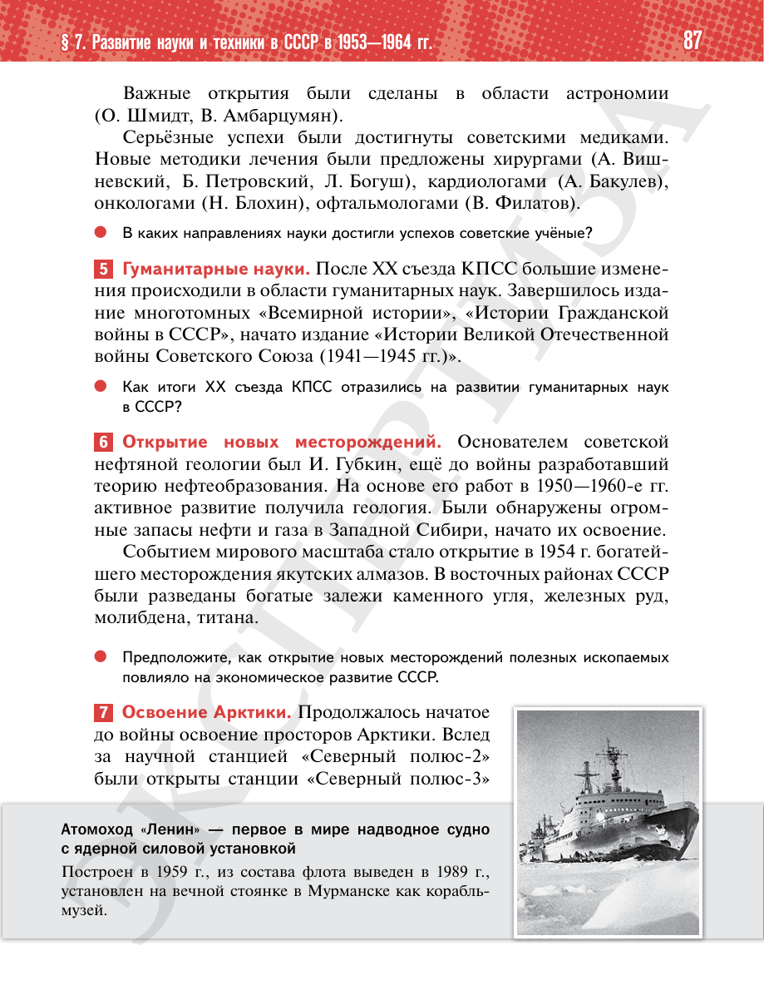

⌂
Мединский.нет
Последнее обновление: 16.08.2026 18:31
Мединский.нет
›
История России. 11 класс. Базовый уровень
›
Глава I. СССР в 1945—1991 гг.
›
§ 7. Развитие науки и техники в СССР в 1953—1964 гг.
›
стр. 88

← стр. 87
Оглавление
стр. 89 →
×